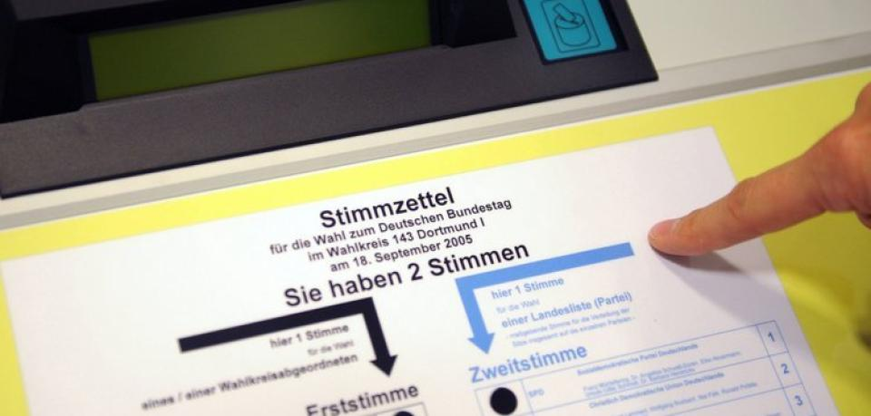
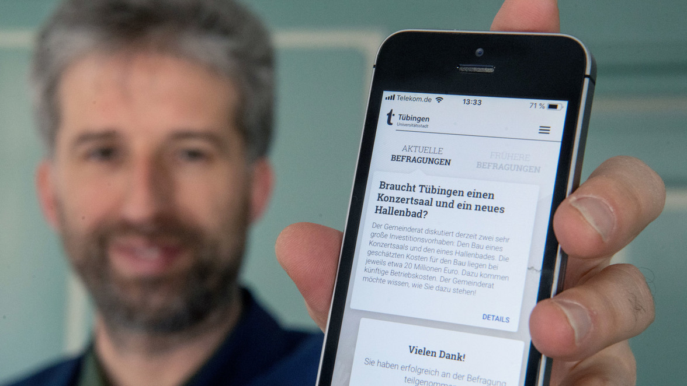
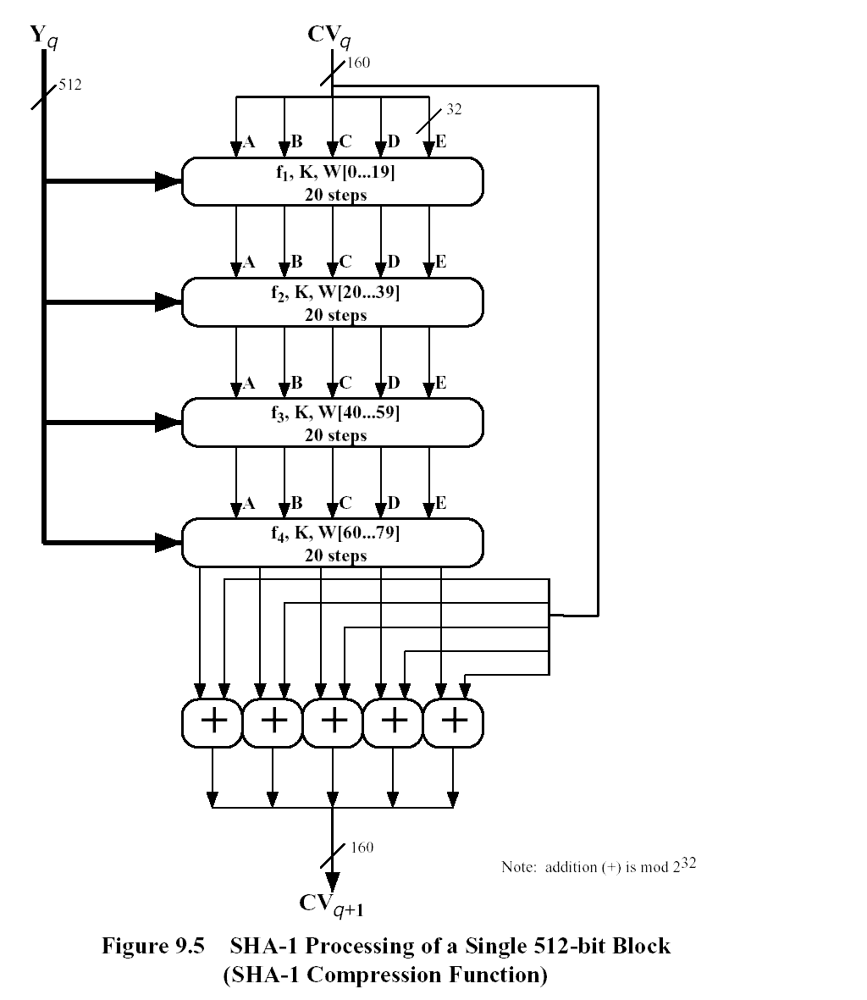
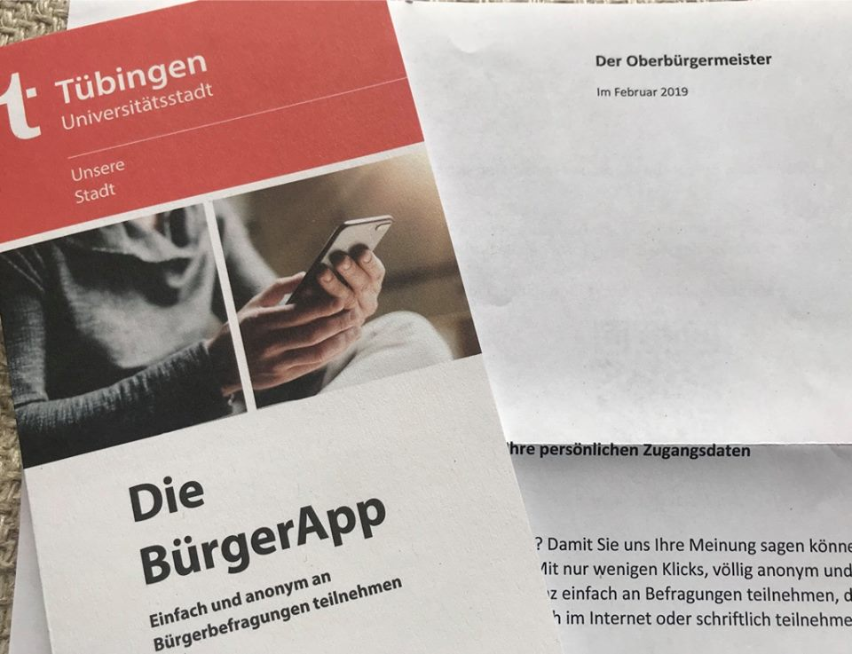
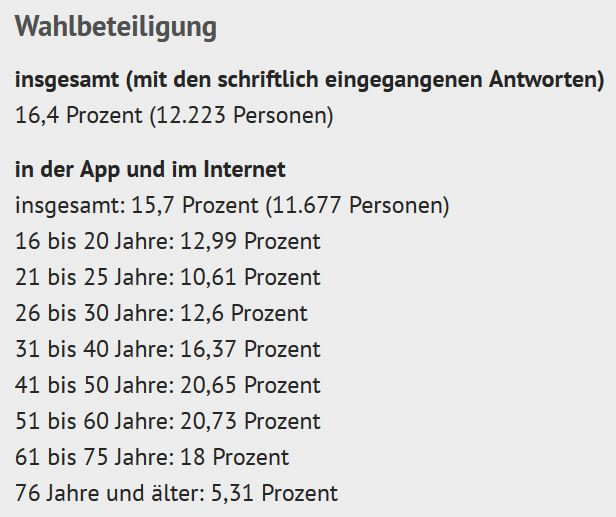
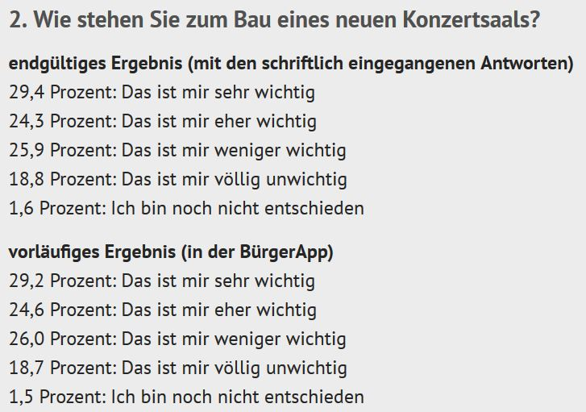
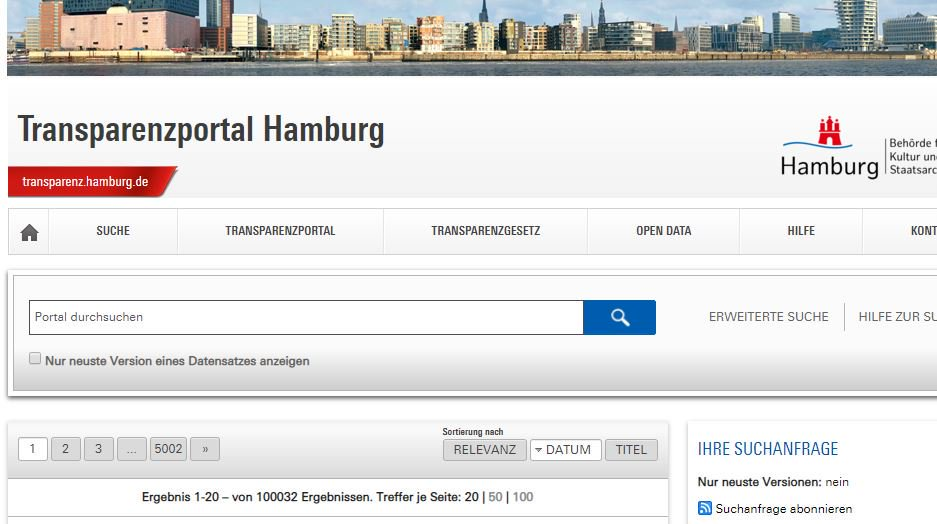

Cybervoting in Tübingen
von
Stefan Leibfarth
im Rahmen der
Vortragsreihe des CCC Stuttgart
09.05.2019
Rückblick: Wahlcomputer in D

Verfassungsgerichtsurteil 2009: "alle wesentlichen Schritte der Wahl [müssen] öffentlicher Überprüfbarkeit unterliegen"
Blick zur Seite
Online-Wahl in der Schweiz: Sicherheitsprobleme --> Vertrauensverlust
Sicherheitsanspruch

Sicher? Oder eh alles egal?
Sicher und Nachvollziebar

Beides geht nicht, wenn überhaupt.
Praktischer Ablauf

Code per Brief --> los gehts · Auf Antrag: Papier
Pseudo-Innovation
Wirtschaftförderung
Kritik des CCCS
Prüfbericht nicht öffentlich
Quelltext nicht öffentlich
Endgeräte nicht vertrauenswürdig
Dem Anbieter muss vertraut werden
manipulierbar oder nicht nachvollziehbar
Der erste Durchlauf


Probleme · Wahlbeteiligung · Junge Zielgruppe
Überhaupt sinnvoll?
Fragestellung · Antwortmöglichkeiten · Informations-Stand
Alternativen

Transparenzportal · Urnengang vereinfachen
Danke für die Aufmerksamkeit
Diese Präsentation: t1p.de/a5ps